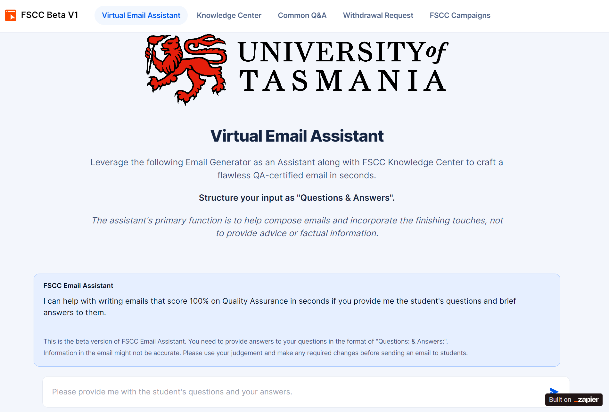

Optimizing Efficiency - Harnessing the Power of established technology and the latest AI tech
In the role of a Student Services consultant and then Team Leader of the Student Services team, I realize that the Student Services staff members encountered several challenges that hindered their efficiency and performance.
One of the primary challenges faced by our team revolves around the extensive manual work and the lack of automation in our workflow, significantly hindering our efficiency levels. A prime example of this can be seen in how we handle communication from future students. Despite encountering numerous repetitive questions, we lack an automated messaging service or standardized text responses, leading to a time-consuming process of crafting individual responses for each query. Although we utilize the Oracle CRM platform, its full potential remains untapped, resulting in missed opportunities to enhance our productivity. Many CRM's features and capabilities are not fully integrated into our workflow, leading to redundant tasks and inefficient handling of student inquiries. In addition, many AI techs are making noises in 2023 and yet the university is still on the fence about its use.
To address these challenges, I adopted a holistic approach that encompassed various aspects of technology adoption, including:
Build a better CRM library of Standard Text and Hotkeys
One of the significant steps implemented was the creation of a collection of standard text responses within our CRM database. These responses are easily accessible through a set of hotkeys, enabling our team to quickly insert pre-approved, comprehensive replies to repetitive queries. This not only reduces the time it takes to compose each individual response but also ensures that every answer contains accurate information and aligns with the university's branding guidelines. By having standardised responses readily available, we maintain consistency in our communication with students, enhancing their overall experience.
To facilitate the integration of this feature into Oracle CRM, I conducted engaging and interactive training sessions. These sessions are designed to assist the team in not only memorizing the commonly used hotkeys but also building confidence in incorporating these responses into their emails. This, in turn, allows them to save time and provide more comprehensive answers to complex questions.
Integrate Zapier and ChatGPT in crafting high-quality communications
To address the efficiency challenges faced by our team, we took proactive measures to introduce automation and leverage artificial intelligence to streamline our processes and enhance our productivity.
Moreover, to further optimize our efficiency and response accuracy, I introduced the use of ChatGPT, an artificial intelligence-powered language model, to our team earlier this year (2023). With ChatGPT, we can now leverage advanced language processing capabilities to tackle common queries and inquiries. I took the initiative to customize the ChatGPT prompt for each OpenAI account used by our team, ensuring that the AI-generated responses adhere to our specific branding requirements and guidelines.
Through careful calibration, we achieved responses that are not only informative but also delivered in the appropriate tone and voice, aligning seamlessly with the university's branding. By avoiding artificial or made-up facts in each response, we uphold the integrity and reliability of every communication.
I then took it a step further and build an AI interface using Zapier Interface, through which I constructed a connection with OpenAI and configured parameters to align with our specific requirements. I meticulously trained the bot to adhere to our stringent Quality Assurance standards. The outcome was truly remarkable: the bot not only acknowledged inquiries but also delivered well-crafted responses, supplemented with valuable information for the inquirer. It concluded each interaction with an appropriate sign-off and our branding, enhancing the overall user experience.
The implementation of these automation measures resulted in a remarkable 50% increase in productivity. Our team's key performance indicator (KPI) for handling emails per hour rose significantly from less than 10 to a remarkable 15. This new benchmark represents a substantial improvement in our response efficiency and has set a higher standard for the team's performance.
The time-saving benefits of automation have freed up our team members to focus on more personalized interactions with students. As a result, we can now dedicate more attention to addressing unique and complex inquiries while maintaining a high level of service quality for all students.